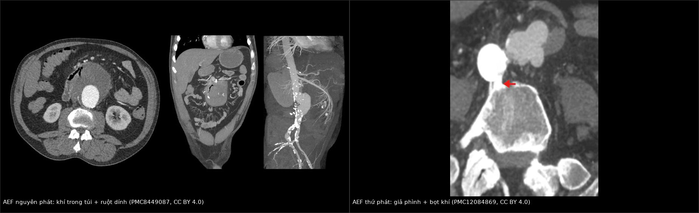
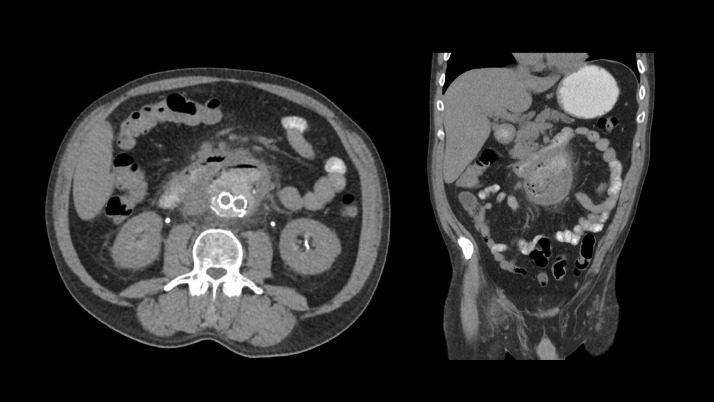
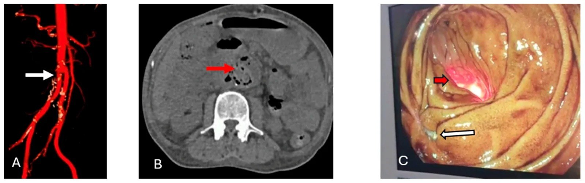
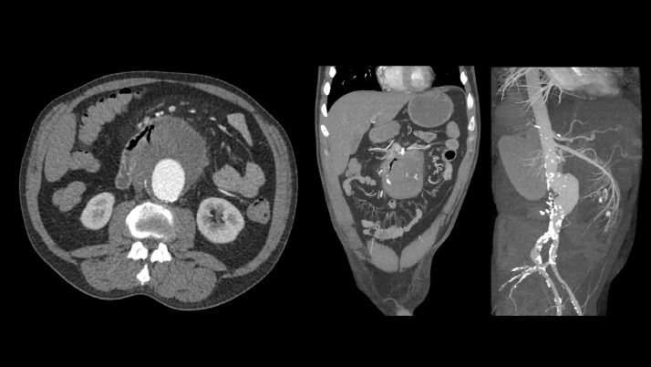
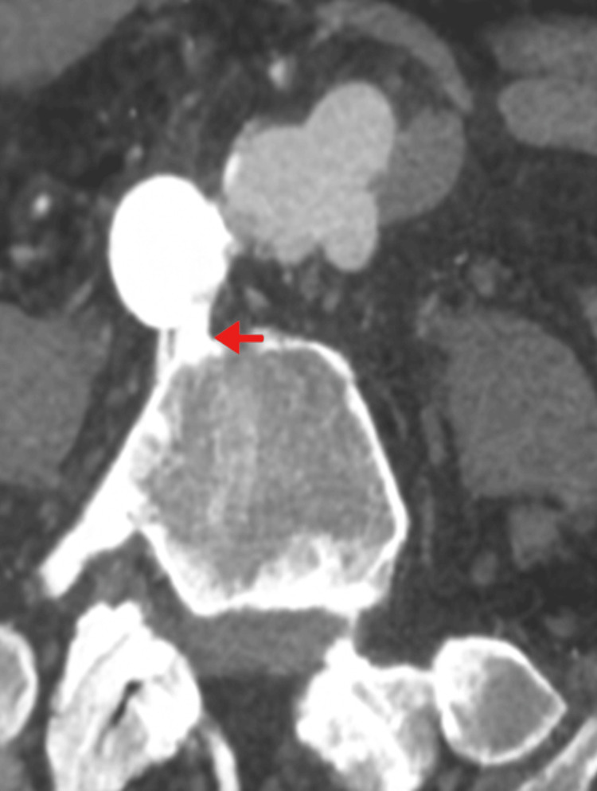
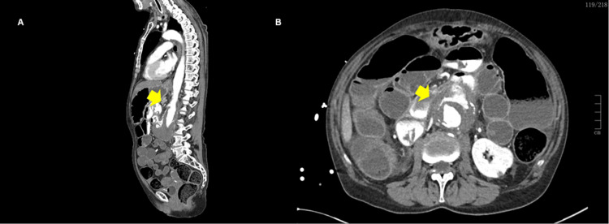

938 — Rò động mạch chủ–ruột (aortoenteric fistula, AEF): nguyên phát và sau EVAR
Tags: pattern:ro-dong-mach-chu-ruot pattern:khi-ngoai-long pattern:gia-phinh-mien-noi pattern:xuat-huyet-tieu-hoa vung:dong-mach-chu-bung vung:dong-mach-chu-nguc vung:ta-trang protocol:CTA-bung-3-thi score:MAGIC
Mức chắc chắn (certainty): tổng hợp y văn (literature synthesis) — 2 loạt phẫu thuật (23 ca hậu mổ ĐMC, J Clin Med 2022, PMC9369578; 10 ca, BMC Gastroenterol 2026, PMC12817749), 1 loạt 10 ca kèm thuật toán chẩn đoán (Med Sci 2026, PMC13609604), 2 ca nguyên văn có ảnh CT (PMC8449087; PMC12084869) và 1 ca nguyên văn có ảnh CTA (PMC12673226). Không có thử nghiệm ngẫu nhiên; mọi ngưỡng xử trí là tổng hợp thực hành, chỗ suy luận được ghi rõ.
Câu chốt: AEF là một đường thông giữa ĐMC và ống tiêu hóa, gần như luôn là cấp cứu chảy máu chết người: máu báo (herald bleed) 52–75% rồi vỡ ồ ạt; tam chứng kinh điển đau bụng + chảy máu tiêu hóa + khối đập chỉ có 6–12%. Ba câu để không bỏ sót: (1) người đã mổ ĐMC/đặt stent-graft mà xuất huyết tiêu hóa tái diễn → AEF cho tới khi loại trừ; (2) trên CTA tìm khí trong túi phình/quanh graft, mất mặt phẳng mỡ giữa ĐMC và ruột, ruột dính vào thành ĐMC, giả phình miệng nối, và dấu chốt thoát cản quang từ ĐMC vào lòng ruột; (3) CTA âm không loại trừ — loạt 23 ca chỉ phát hiện 47,8% trên CTA, 39,1% chỉ thấy khi mổ.
1. Tổng quan bệnh học – cơ chế hình ảnh (TẠI SAO)
1.1 Hai cơ chế, hai bệnh cảnh
- AEF nguyên phát (primary AEF, PAEF): phình ĐMC xơ vữa ăn mòn thành ruột kề bên (hay gặp tá tràng D3–D4 vì đoạn này cố định sau phúc mạc, sát ĐMC ngay dưới động mạch thận) — hoặc do nhiễm khuẩn ĐMC/viêm ĐMC nhiễm trùng, dị vật, xạ trị, ung thư. Tần suất 0,007/1 triệu dân/năm, khoảng 250 ca trong y văn; 0,04–0,7% trong tử thiết (PMC8449087; PMC12817749; PMC12673226).
- AEF thứ phát (secondary AEF, SAEF): biến chứng muộn của mổ ĐMC/EVAR: nhiễm miếng ghép mạn + áp lực đập của ĐMC làm mòn ruột và miệng nối. Tần suất 0,36–1,6% sau mổ hở (PMC9369578; PMC12673226), 0,5–2,3% sau mổ chung (PMC12817749), tới 3,9% ở giả phình miệng nối được đặt stent-graft (PMC12673226). Thời gian từ mổ đến khi rò 69,4 ± 72,5 tháng (PMC9369578), trung bình 8,05 năm (0,2–25) (PMC13609604).
- Phân bố: gộp y văn cho thấy 56,1% AEF ở ĐMC bụng, 43,9% ở ĐMC ngực; AEF bụng 78% là thứ phát, còn AEF ngực 72% là nguyên phát; 16% liên quan ung thư tiêu hóa (PMC13609604). AEF ngực (aortoesophageal, AOF) do phình 54,2%, dị vật 19,2%, ung thư thực quản 17% — tam chứng Chiari gồm khó nuốt ngực giữa → máu báo → sốc mất máu (PMC13609604).
- Vì sao "máu báo" lại nguy hiểm: lỗ rò nhỏ bị cục máu đông bít tạm → bệnh nhân ổn định vài giờ đến vài ngày, nội soi/CTA có thể âm; khi cục đông trôi → vỡ ồ ạt. Đây là lý do không được trì hoãn vì "đã cầm máu".
1.2 TẠI SAO nhìn thấy trên CT: khí, mỡ, cản quang
- Khí ngoài lòng (ectopic gas): khí trong lòng ruột có −1.000 HU, mỡ −100 đến −50 HU, máu đông 50–80 HU, cản quang 200–400 HU. Khí trong túi phình đã huyết khối hoặc quanh miếng ghép không thể giải thích bằng phẫu thuật đơn thuần → dấu hiệu mạnh của rò (PMC8449087; PMC3711735). Đọc trên cửa sổ phổi (W 1.500/L −600) để không bỏ sót bọt khí nhỏ.
- Mất mặt phẳng mỡ + ruột dính thành ĐMC: viêm quanh mạch do nhiễm graft làm mờ/mất lớp mỡ giữa ĐMC và ruột; ruột bị kéo dính (tethering) vào túi phình. Đây là dấu sớm, có thể xuất hiện trước khi có khí (PMC8449087; PMC3711735).
- Thoát cản quang trực tiếp: cản quang trong lòng ĐMC đi vào lòng ruột — đặc hiệu nhưng hiếm, nên không dùng cản quang đường uống thường quy để tìm dấu này (PMC8449087).
- Giả phình miệng nối: sau mổ hở/EVAR, miệng nối mất tính toàn vẹn → túi giả phình quanh sợi chỉ/vòng stent, thành mỏng, bọt khí trong túi = dấu SAEF (PMC12084869; PMC13609604).
- Vì sao CTA vẫn có thể âm: rò nhỏ, gián đoạn, bị cục máu đông bít; khí có thể đã thoát qua ruột; lát cắt dày làm mất bọt khí 1–2 mm. Vì vậy phải lát ≤ 1 mm + MPR.
1.3 Ngưỡng định lượng trụ cột
| Đại lượng | Con số | Nguồn |
|---|---|---|
| PAEF | 0,007/1 triệu dân/năm; 0,04–0,7% tử thiết (nguồn khác ghi tới 0,07%); < 0,1% ca phình ĐMC bụng | PMC8449087; PMC12817749; PMC12673226 |
| SAEF sau mổ ĐMC | 0,36–1,6% (mổ hở) · 0,5–2,3% · tới 3,9% với giả phình được EVAR | PMC9369578; PMC12817749; PMC12673226 |
| Thời gian từ mổ đến rò | 69,4 ± 72,5 tháng · trung bình 8,05 năm (0,2–25) | PMC9369578; PMC13609604 |
| Máu báo (herald bleed) | 52–75% | PMC13609604 |
| Tam chứng kinh điển | Chỉ 6–12% lúc nhập viện | PMC12817749 |
| Tỉ lệ phát hiện | CTA 47,8%, nội soi 13%, chỉ thấy khi mổ 39,1% (n = 23) · CTA 10/10 (n = 10) · nội soi 1/3 ca có chỉ định | PMC9369578; PMC12817749 |
| Tử vong | 30 ngày 30% (loạt 10 ca); trong viện 43,5% (loạt 23 ca); chung 60–65,2%; không điều trị ~100%; điều trị trong 60 ngày còn 50% | PMC13609604; PMC9369578 |
| Theo đường vào | EVAR cầm máu: tử vong trong viện 7% vs mổ hở 34%; nhiễm khuẩn muộn 42% vs 19% | PMC13609604 (dẫn y văn) |
| Biểu hiện chảy máu vs nhiễm mạn | Tử vong chu phẫu 66,7% vs 18,2% (p = 0,019) | PMC9369578 |
| Stent-graft cầm máu tạm ở ca đang chảy | Sống chu phẫu 66,6% (4/6) vs mổ hở cấp 0% (0/6), p = 0,014 | PMC9369578 |
2. Mẫu hình + chẩn đoán phân biệt theo vị trí (Gamut)
Mẫu hình chốt: người có tiền sử phình/mổ ĐMC, xuất huyết tiêu hóa (có thể đã tạm ngừng), CTA có khí trong túi/quanh graft + mất mặt phẳng mỡ + ruột dính thành ĐMC ± giả phình miệng nối; dấu chốt là cản quang từ ĐMC vào ruột.
2.1 Gamut theo vị trí
| Vị trí | Thực thể | Vì sao khác nhau |
|---|---|---|
| ĐMC bụng – tá tràng D3/D4 | SAEF sau mổ hở/EVAR (hay nhất), PAEF do phình xơ vữa | Đoạn tá tràng cố định sau phúc mạc, sát ĐMC; SAEF thường ở miệng nối hoặc thân graft |
| ĐMC bụng – hỗng tràng/đại tràng | SAEF thể ăn mòn cạnh graft (paraprosthetic erosion), rò do ung thư/xạ trị | Ruột di động, dấu khí khu trú, ít mức độ dính; không có thông trực tiếp = type II |
| ĐMC ngực – thực quản (AOF) | Phình ĐMC ngực, dị vật (xương cá/gà), ung thư thực quản, sau TEVAR | Tam chứng Chiari; trung thất nhiễm → tử vong nhanh; không có "máu báo" kéo dài |
| ĐMC – tĩnh mạch chủ (aortocaval) | Rò ĐMC–TM chủ (không phải AEF) | Cản quang vào TM chủ thì sớm, không có khí trong ruột; suy tim cấp |
| Quanh graft không rò | Nhiễm miếng ghép ĐMC (MAGIC), áp-xe quanh graft | Khí/dịch quanh graft nhưng không thấy đường vào ruột; cần PET-CT/theo dõi |
2.2 Mnemonic AORTA (đọc CTA)
- A — Air ngoài lòng: trong túi phình, quanh graft, theo đường rò.
- O — Obliteration mặt phẳng mỡ giữa ĐMC và ruột; ruột dính/tethering.
- R — Rupture/pseudoaneurysm ở miệng nối hoặc thân graft.
- T — Transit cản quang từ ĐMC vào lòng ruột (dấu đặc hiệu nhất).
- A — Ancillary: dịch/đặc quanh graft, dày thành ruột kề, hạch, khí trong mô mềm.
3. Bảng so sánh phân biệt (ma trận đối chiếu)
| Thực thể (entity) | Hình ảnh điển hình | Chốt vào (rule-in) | Chốt loại (rule-out) | Gợi ý xác nhận |
|---|---|---|---|---|
| AEF nguyên phát (PAEF) | Phình ĐMC bụng 8,9 × 10,3 cm trong ca nguyên văn; khí trong túi huyết khối, quai hỗng tràng dính thành, không có miếng ghép | Khí trong túi phình + ruột dính + không tiền sử mổ ĐMC | Có graft/stent → nghĩ SAEF; khí đơn độc sau mổ mới → chưa chốt | CTA 3 thì lát 1 mm; mổ xác nhận |
| SAEF type I (thông trực tiếp graft–ruột) | Giả phình miệng nối, khí trong túi, thoát cản quang vào ruột, tạng dính quanh graft | Tiền sử mổ ĐMC + khí quanh graft + giả phình miệng nối | Không có khí/dịch quanh graft, không giả phình → ít nghĩ type I | CTA + PET-CT nếu nhiễm mạn; mổ |
| SAEF type II (ăn mòn cạnh graft, không thông trực tiếp) | Dịch/khí quanh graft, dày ruột kề, không thấy đường rò trên CTA | Nhiễm graft mạn + xuất huyết tiêu hóa + khí quanh graft | Thấy đường thông trực tiếp → type I | Nội soi + PET-CT; mổ thấy ăn mòn thành ruột |
| Nhiễm miếng ghép ĐMC không rò | Dịch quanh graft, khí, giả phình, không có máu tiêu hóa | Sốt + CRP tăng + dịch/khí quanh graft | Có chảy máu tiêu hóa + khí trong lòng ruột → nghĩ AEF | MAGIC; PET-CT; cấy máu/mô |
| Phình nhiễm khuẩn (mycotic) / viêm ĐMC nhiễm trùng | Túi phình dạng thoi, khí trong thành, mất mặt phẳng mỡ, không có graft | Sốt + cấy máu dương + khí trong thành ĐMC | Có miệng nối/graft → SAEF; không khí → xơ vữa đơn thuần | CTA + cấy máu; PET-CT |
| Xơ hóa sau phúc mạc / aortitis | Dày mô mềm quanh ĐMC đồng tâm, không khí, không giả phình | Dày quanh ĐMC đều, không khí, không dính ruột | Khí ngoài lòng + ruột dính → AEF | MRI/CT; sinh thiết nếu cần |
| Xuất huyết tiêu hóa khác | Loét, angiodysplasia, Dieulafoy, giãn tĩnh mạch — không có bất thường quanh ĐMC | Nội soi thấy nguồn chảy, CTA bụng bình thường | Có tiền sử mổ ĐMC + khí quanh graft → vẫn phải loại AEF | Nội soi; CTA lặp |
| AOF do dị vật/ung thư | Dị vật cản quang trong thực quản/trung thất, khí trung thất, phình ĐMC ngực | Dị vật + khí trung thất + tam chứng Chiari | Không dị vật, phình ĐMC bụng → AEF bụng | CT ngực; nội soi thực quản |

Trái: AEF nguyên phát — phình ĐMC bụng đã huyết khối, khí trong túi (mũi tên đen), quai hỗng tràng dính vào thành túi (PMC8449087, CC BY 4.0). Phải: AEF thứ phát — giả phình miệng nối (mũi tên đỏ) với bọt khí trong túi sau mổ hở ĐMC bụng 12 năm (PMC12084869, CC BY 4.0). Ảnh ghép letterbox, không crop.3.1 Ba dấu hiệu cần đọc kỹ
- Khí trong túi phình đã loại trừ (excluded sac) sau EVAR: khí tăng thêm hoặc mới xuất hiện kèm sốt/chảy máu là dấu rò, không phải "khí lành" sau can thiệp. Ca nguyên văn: sau EVAR 5 ngày, khí trong túi tăng rồi cản quang đường uống vào túi xác nhận rò (PMC8449087 — Hình 4–5).
- Mặt phẳng mỡ mất + ruột dính: phải đọc axial + coronal + sagittal, so với ĐMC trên/dưới tổn thương; dấu này đi trước khí và không đặc hiệu (gặp trong nhiễm graft đơn thuần) (PMC3711735).
- Thoát cản quang vào ruột: nếu thấy, chẩn đoán gần như chắc; nhưng không đặt sonde cản quang đường uống chỉ để tìm dấu này — nguy cơ che lấp khí và làm nặng nhiễm (PMC8449087).

CT bụng có cản quang đường uống: cản quang trong lòng ruột đi vào túi phình đã được loại trừ — xác nhận đường thông. Đây là dấu đặc hiệu nhưng hiếm; không dùng cản quang uống thường quy. Nguồn: Radiol Case Rep 2021 (PMC8449087), CC BY 4.0.4. Protocol chụp + hệ phân độ/điểm chuẩn hóa
4.1 Protocol theo tình huống
| Tình huống | Chuỗi bắt buộc | Mục đích |
|---|---|---|
| Nghi AEF, huyết động còn ổn | CTA ĐMC ngực–bụng–chậu: non-contrast → động mạch → tĩnh mạch cửa 70–90 giây; lát ≤ 1 mm, MPR coronal/sagittal, cửa sổ phổi | Non-contrast phát hiện vôi hóa, khí, máu tụ; thì TM cửa bắt thoát cản quang chậm vào ruột |
| Đang sốc/không ổn | CTA "damage control" hoặc đưa thẳng phòng mổ; không chờ nội soi | Cầm máu ưu tiên hơn chẩn đoán hoàn chỉnh |
| CTA âm nhưng nghi cao | Nội soi tiêu hóa trên (EGD) ± siêu âm nội soi (EUS); PET-CT nếu nhiễm graft mạn; CTA lặp sau 24–48 giờ | EGD thấy khối đập, cục máu dính, đầu stent lộ; EGD âm không loại trừ (chỉ 1/3 ca có chỉ định là chẩn đoán được, PMC12817749) |
| Nhiễm graft mạn, chưa rò | PET-CT / leukocyte scan + MAGIC criteria | Phân biệt nhiễm graft với AEF; định hướng thời điểm mổ |
| Trước can thiệp | CTA có đường kính cổ túi, chiều dài vùng hạ cánh, nhánh tạng, tuần hoàn bàng hệ | Chọn stent-graft cầu nối vs mổ hở; tránh che nhánh quan trọng |
4.2 Hệ phân độ/điểm thực hành
- Phân loại AEF: nguyên phát vs thứ phát; thứ phát chia type I (thông trực tiếp graft–ruột, thường do bục miệng nối/giả phình) và type II (ăn mòn cạnh graft, không thông trực tiếp) (PMC13609604; PMC9369578).
- MAGIC (Management of Aortic Graft Infection Collaboration): tiêu chuẩn lâm sàng + xét nghiệm + hình ảnh cho nhiễm graft/endograft — dùng để không bỏ sót nhiễm nền và theo dõi sau mổ; không có thang điểm riêng cho AEF.
- Quyết định điều trị dựa trên huyết động + nhiễm + khả năng mổ, không dựa vào kích thước túi.
4.3 Flowchart xử trí
flowchart TD
A[Nghi AEF: xuất huyết tiêu hóa + tiền sử mổ ĐMC hoặc EVAR] --> B[Ổn định: đường truyền lớn, máu, TXA, kháng sinh phổ rộng]
B --> C[CTA ngực–bụng–chậu: non-contrast + động mạch + tĩnh mạch cửa, lát ≤ 1 mm]
C --> D{Có khí ngoài lòng, mất mặt phẳng mỡ, giả phình miệng nối?}
D -->|Có| E[AEF]
D -->|Không nhưng nghi cao| F[EGD ± EUS; PET-CT nếu nhiễm mạn; CTA lặp 24–48 giờ]
F --> G{Thấy khối đập, cục máu, đầu stent lộ?}
G -->|Có| E
G -->|Không| H[Không loại trừ nếu đang chảy: theo dõi sát + mổ khi nghi ngờ cao]
E --> I{Huyết động ổn định?}
I -->|Không| J[EVAR/TEVAR cầm máu tạm + kháng sinh]
I -->|Có| K[Mổ triệt để: cắt graft + tái tạo mạch + sửa ruột]
J --> K
K --> L[Kháng sinh dài hạn + theo dõi nhiễm/tái phát]
- Nguyên tắc: EVAR/TEVAR là cầu nối cầm máu, không phải chữa khỏi — vẫn cần cắt bỏ vật liệu nhiễm + tái tạo mạch + xử lý ruột khi bệnh nhân ổn. Loạt 23 ca: mổ hở 82,6%, EVAR đơn thuần 8,7%, hybrid 4,3% (PMC9369578).
- Kháng sinh: phổ rộng ngay (đường thông với ruột → nhiễm đa vi khuẩn, kể cả nấm); cấy máu 40% dương, Candida hay gặp (PMC13609604); thời gian theo lâm sàng/vi sinh, không có ngưỡng thống nhất.

Ca 8: sau mổ phình ĐMC vỡ bằng miếng ghép tẩm rifampin — (A) graft, (B) khí quanh graft (mũi tên đỏ), (C) hình ảnh khác trong cùng chuỗi. Khí quanh graft không đặc hiệu (có thể gặp ngay sau mổ), nhưng kèm chảy máu tiêu hóa thì phải loại AEF. Nguồn: Med Sci (Basel) 2026 (PMC13609604), CC BY 4.0.5. Biến thể bình thường và cạm bẫy
5.1 Biến thể/dấu hiệu dễ đọc quá
- Khí trong túi ngay sau EVAR: một ít khí có thể tồn tại vài tuần sau can thiệp; không đủ để gọi AEF nếu không có chảy máu, sốt, dịch quanh graft. Ngược lại, khí tăng dần hoặc khí mới sau giai đoạn ổn định là bất thường (PMC8449087).
- Vôi hóa thành ĐMC: mảnh vôi rất sáng có thể giả khí trên cửa sổ mềm; đọc cửa sổ phổi và non-contrast để phân biệt (vôi > 200 HU, khí −1.000 HU).
- Ruột chứa khí sát ĐMC: khí trong lòng ruột không phải khí trong túi; phải xác định vị trí tương đối với thành túi/graft trên nhiều mặt phẳng.
5.2 Cạm bẫy (pitfall)
- "CTA âm = không có AEF" — SAI. Loạt 23 ca: CTA chỉ 47,8%, 39,1% chẩn đoán khi mổ (PMC9369578). Nghi cao → nội soi/PET/mổ.
- "Nội soi âm = loại trừ" — SAI. EGD chỉ 1/3 ca có chỉ định là thấy tổn thương (PMC12817749); tổn thương ở D3–D4 dễ bị bỏ qua; không bơm hơi quá mức ở người có phình ĐMC.
- Nhầm khí quanh graft với nhiễm graft đơn thuần — cả hai đều có khí; chảy máu tiêu hóa + giả phình miệng nối nghiêng AEF; PET-CT giúp nhưng không thay thế đánh giá đường rò.
- Bỏ sót "máu báo" — bệnh nhân ổn định sau một lần nôn máu dễ bị cho về; 52–75% có máu báo trước vỡ (PMC13609604). Ở người đã mổ ĐMC, xuất huyết tiêu hóa phải chụp CTA.
- Nhầm AEF với loét/Dieulafoy — nội soi thấy ổ loét không loại trừ AEF; không thấy nguồn ở D3–D4 là gợi ý.
- Can thiệp EVAR xong rồi dừng — nhiễm vật liệu tiếp tục; 42% nhiễm khuẩn muộn sau EVAR so với 19% sau mổ hở (PMC13609604 dẫn y văn). Phải có kế hoạch mổ triệt để.
- Không cấy máu/không kháng sinh sớm — 40% cấy máu dương; Candida làm tiên lượng xấu (PMC13609604).
- Bỏ sót AOF thể dị vật — bệnh nhân nuốt xương rồi sốt + đau ngực + nôn máu; CTA thấy dị vật + khí trung thất (PMC13609604).
- "Khí trong túi sau EVAR là bình thường" — chỉ đúng khi không triệu chứng và khí giảm dần; khí tăng = dấu rò (PMC8449087).
- Kết luận từ một thì: thoát cản quang có thể chỉ thấy thì tĩnh mạch cửa; chụp một thì động mạch dễ âm.
6. Tự lượng giá — Blind Quiz
Ca 1 — Nam 52 tuổi, ngất, không đau bụng; CT bụng có cản quang tình cờ. Nhìn axial + coronal + sagittal trước, mô tả trước.

- Hỏi: bất thường ngoài phình ĐMC là gì? Nguyên phát hay thứ phát? Bước tiếp theo?
Bấm để hiện đáp án (findings + chẩn đoán)
- Dấu hiệu: phình ĐMC bụng dưới thận 8,9 × 10,3 cm; khí trong túi đã huyết khối (mũi tên đen); quai hỗng tràng dính vào thành túi; không có miếng ghép.
- Chẩn đoán: AEF nguyên phát — phình xơ vữa ăn mòn hỗng tràng.
- Xử trí trong ca: đặt stent-graft động mạch chủ–chậu hai bên cùng ngày (cầu nối); sau đó 5 ngày có máu đỏ tươi qua trực tràng, CT cho thấy khí trong túi tăng; chuyển mổ cắt túi phình + bypass nách–hai đùi.
- Bài học: khí trong túi + ruột dính = AEF cho tới khi chứng minh ngược, dù bệnh nhân không đau bụng.
- Nguồn: Radiol Case Rep 2021 (PMC8449087), CC BY 4.0.
Ca 2 — Nam 74 tuổi, mổ hở phình ĐMC bụng cách đây 12 năm; mệt, phân đen 2 tuần rồi đi cầu máu ồ ạt + sốc. Nhìn CTA trước.

- Hỏi: tổn thương ở đâu? Vì sao gọi là thứ phát? Hai dấu hiệu trên ảnh?
Bấm để hiện đáp án (findings + chẩn đoán)
- Dấu hiệu: giả phình miệng nối động mạch chủ xa kích thước ~3 × 2 cm (mũi tên đỏ), bọt khí bên trong; chuỗi bệnh cảnh máu báo 2 tuần rồi xuất huyết ồ ạt.
- Chẩn đoán: AEF thứ phát sau mổ hở ĐMC bụng (miệng nối + nhiễm).
- Xử trí: EVAR cầu nối + kháng sinh theo kinh nghiệm; sau đó cần mổ triệt để cắt vật liệu nhiễm.
- Bài học: máu báo ở người có tiền sử mổ ĐMC = báo động đỏ, không chờ nội soi âm.
- Nguồn: Cureus 2025 (PMC12084869), CC BY 4.0.
Ca 3 — Nữ 70 tuổi, phình ĐMC bụng theo dõi, nhập viện nôn máu ồ ạt, HA 84/45, Hb 6,5 g/dL. Nhìn CTA sagittal và axial trước.

- Hỏi: dấu hiệu trực tiếp là gì? Nội soi trước đó thấy "chảy máu dạ dày không rõ nguồn" — loại trừ được AEF không? Xử trí?
Bấm để hiện đáp án (findings + chẩn đoán)
- Dấu hiệu: (A) sagittal và (B) axial — thoát cản quang trực tiếp từ lòng ĐMC vào thành/tá tràng (mũi tên vàng), mất mặt phẳng mỡ, túi phình lớn.
- Chẩn đoán: AEF nguyên phát (phình xơ vữa ăn mòn tá tràng).
- Nội soi âm không loại trừ: nội soi chỉ thấy chảy máu dạ dày không nguồn; tổn thương ở D3–D4 khó thấy.
- Xử trí: hồi sức (máu, PCC, canxi), kháng sinh phổ rộng, chuyển mổ/can thiệp cầm máu khẩn; ca này tử vong trong vài giờ trước khi chuyển tuyến.
- Nguồn: Cureus 2025 (PMC12673226), CC BY 4.0.
Bài liên quan chéo
- 901 – Tổng quan Điện quang Can thiệp — tam giác an toàn, động học thoát mạch
- 920 – Nút mạch cầm máu tiêu hóa — phân biệt thoát hoạt tính vs giả phình vs giả thoát
- 148 – Nhiễm trùng mảnh ghép nội mạch động mạch chủ — MAGIC, PET/CT, quyết định lấy hay giữ mảnh ghép (hàng DDx của AEF)
- 170 – Phình động mạch chủ bụng — ngưỡng can thiệp, theo dõi túi
- 172 – Theo dõi sau can thiệp bóc tách ĐMC bụng — endoleak, nhiễm stent-graft
- 093 – Chèn ép tĩnh mạch chủ trên — stent tĩnh mạch, biến chứng
- 933 – Sốc phản vệ & PC-AKI do thuốc cản quang — an toàn cản quang ở bệnh nhân sốc
Ảnh
- Tên file:
938_*_Modality_SourceID.jpg; nguồn + giấy phép từng ảnh trongimages/CREDITS.md. images/composite_nguyen-phat-vs-thu-phat.jpg— ảnh ghép chỉ từ nguồn CC BY 4.0 (PMC8449087 + PMC12084869), letterbox bằngtools/make_composite.py.
Không dùng để chẩn đoán độc lập khi chưa có người hướng dẫn.